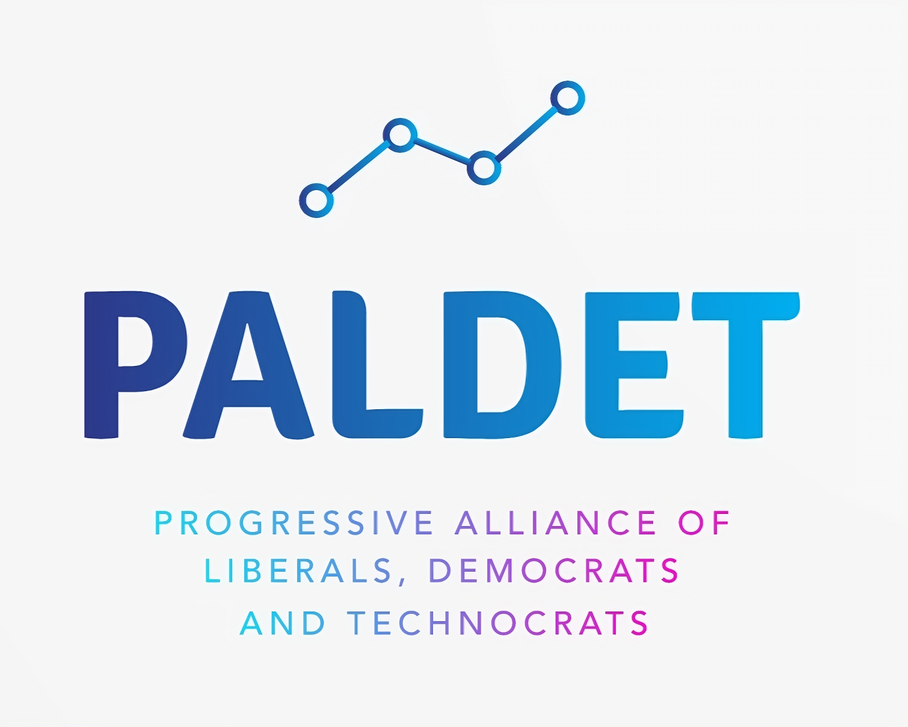

Once upon a time, in the land of Ereneia, the Progressive Alliance of Liberals, Democrats, and Technocrats (PALDET) ruled with a rainbow-colored iron fist. The early years were golden, like the shimmering logo on their campaign posters. Progressive policies flourished, and the people of Ereneia felt the warmth of social justice. Young entrepreneurs sprouted like mushrooms after a rain, inspired by the promise of a bright, inclusive future.
But then, the skies darkened. A crisis struck, and PALDET, in a panic, reached for their old, dusty economics textbooks. Out came the 1980s playbook: austerity, deregulation, privatization, tax cuts for the rich, and bailouts for banks and failing companies. It was socialism for the rich and capitalism for the poor, and it went about as well as you'd expect.
Unemployment soared, social services crumbled, and the people of Ereneia began to whisper, "What happened to our progressive paradise?" The young, once so full of hope, now felt betrayed. They took to the streets, but their voices were drowned out by the carefully crafted PR campaigns PALDET aimed at the older population. The older folks, still dazzled by the colorful graphics and the promise of a secure future, voted PALDET back into power for another five years.
For the next five years, PALDET continued to favor the rich, making the economy even more vulnerable to future crises. They wrapped their neoliberal policies in a brand new shiny, progressive package, complete with rainbow flags and gender-neutral pronouns. They were masters of identity politics, but when it came to the economy, they were clueless.
Finally, the people of Ereneia had enough. The Green Left Party, with their promises of a truly sustainable and equitable future, nearly won the election. They were up against the National Rebirth Party, a far-right group that promised to "take back" Ereneia. In the end, the Green Left Party emerged victorious, but the victory was bittersweet. The damage PALDET had done was deep and widespread.
Looking back, the only thing people could really say about PALDET was that they had the best graphics. The most skilled designers in the nation, and possibly the continent, had crafted their campaign materials. Politically, they were best at identity politics, but when it came to the economy, they were very bad.
When all was good, they were social democrats. When it was bad, they were neoliberals. They were the quintessential Renew Europe party - shiny on the outside, hollow on the inside. But hey, at least the rainbow capitalism looked pretty, right?
And so, the people of Ereneia moved forward, hoping for a future where the graphics matched the substance, and the promises were as real as the rainbow itself.
Addenda

PALDET LogoThe PALDET Manifesto
We, Progressive Alliance of Liberals, Democrats, and Technocrats (PALDET), are committed to building a better future for all Ereneians. Our party is founded on the principles of progress, inclusivity, and responsible governance. We believe in the power of liberal democracy, the importance of individual freedom, and the need for a strong, efficient, and effective state.
Our Core Values
Liberty and Individual Freedom: We believe that every Ereneian has the right to live their life as they see fit, as long as they do not harm others. We will protect and promote individual freedoms, including freedom of speech, assembly, and the press.
Democracy and Participation: We are committed to strengthening Ereneia's democratic institutions and ensuring that every citizen has a voice in the decision-making process. We will promote transparency, accountability, and citizen participation in governance.
Progress and Innovation: We believe that Ereneia should be a beacon of progress and innovation. We will invest in education, research, and development to drive economic growth, improve living standards, and address the challenges of the 21st century.
Social Justice and Equality: We are committed to promoting social justice and equality for all Ereneians, regardless of their background, income, or social status. We will address poverty, inequality, and social exclusion through targeted policies and programs.
Environmental Sustainability: We recognize the importance of protecting Ereneia's natural environment and addressing the challenges of climate change. We will promote sustainable development, reduce carbon emissions, and invest in renewable energy.
Our Economic Policy
Free Market Economy: We believe in the power of the free market to drive economic growth and innovation. We will promote competition, entrepreneurship, and trade to create jobs and increase prosperity.
Social Market Economy: We also recognize the need for a social safety net and social protection policies to ensure that everyone benefits from economic growth. We will invest in education, healthcare, and social welfare programs to promote social cohesion and reduce inequality.
Progress and Innovation: We believe that Ereneia should be a beacon of progress and innovation. We will invest in education, research, and development to drive economic growth, improve living standards, and address the challenges of the 21st century.
Fiscal Responsibility: We are committed to responsible fiscal management and reducing Ereneia's debt burden. We will promote budget discipline, reduce wasteful spending, and invest in high-priority areas such as education, healthcare, and infrastructure.
Investment in Human Capital: We believe that investing in human capital is essential for Ereneia's economic growth and competitiveness. We will invest in education, training, and lifelong learning programs to equip Ereneians with the skills they need to succeed in the modern economy.
Our Social Policy
Education: We believe that education is the key to unlocking individual potential and driving economic growth. We will invest in education, improve teacher training, and promote vocational training and lifelong learning.
Healthcare: We are committed to ensuring that every Ereneian has access to quality healthcare. We will invest in healthcare infrastructure, improve healthcare services, and promote preventive care.
Social Welfare: We will invest in social welfare programs to support vulnerable populations, including the elderly, the disabled, and the unemployed.
Immigration and Integration: We believe that immigration is essential for Ereneia's economic growth and cultural diversity. We will promote a fair and humane immigration policy, support integration programs, and protect the rights of migrants and refugees.
Our Environmental Policy
Climate Action: We recognize the urgent need to address climate change and reduce carbon emissions. We will invest in renewable energy, improve energy efficiency, and promote sustainable land use practices.
Conservation and Protection: We are committed to protecting Ereneia's natural environment and preserving biodiversity. We will promote conservation efforts, protect national parks and wildlife reserves, and reduce pollution.
Sustainable Development: We believe that economic development and environmental protection are not mutually exclusive. We will promote sustainable development practices, reduce waste, and invest in green technologies.
Our Governance Policy
Transparency and Accountability: We are committed to transparent and accountable governance. We will promote open government, reduce bureaucracy, and increase citizen participation in decision-making.
Anti-Corruption: We will take a zero-tolerance approach to corruption and ensure that all public officials are held accountable for their actions.
Rule of Law: We believe in the importance of the rule of law and an independent judiciary. We will promote judicial independence, reduce corruption, and ensure that everyone is equal before the law.
Our Foreign Policy
Global Cooperation: We recognize the importance of global cooperation in addressing global challenges such as climate change, poverty, and inequality. We will promote international cooperation and support multilateral institutions.
Regional Stability: We are committed to promoting regional stability and security in Ereneia's neighborhood. We will strengthen Ereneia's relationships with neighboring countries, support regional cooperation, and promote conflict resolution.
Global Human Rights: We believe that human rights are universal and should be respected everywhere. We will promote human rights, democracy, and the rule of law around the world, and hold countries accountable for human rights abuses.
Our Electoral Pledges
Create a more competitive economy: We will reduce bureaucracy, cut red tape, and promote entrepreneurship to create a more competitive economy that benefits all Ereneians.
Invest in education and skills: We will increase funding for education, improve teacher training, and promote vocational training to equip Ereneians with the skills they need to succeed in the modern economy.
Protect the environment: We will invest in renewable energy, reduce carbon emissions, and promote sustainable development to protect Ereneia's natural environment for future generations.
Improve healthcare: We will increase funding for healthcare, improve such services, and promote preventive care to ensure that every Ereneian has access to quality healthcare.
Promote social justice and equality: We will address poverty, inequality, and social exclusion through targeted policies and programs to ensure that every Ereneian has an equal opportunity to succeed.
Our Leadership
We are committed to a leadership style that is transparent, accountable, and inclusive. Our leaders will be chosen through a democratic process, and we will promote diversity and representation at all levels of the party.
Our Membership
We are open to anyone who shares our values and is committed to our mission. We will promote diversity and inclusion within the party, and ensure that every member has a voice in decision-making.
Our Funding
We will ensure that our party is funded transparently and accountably, and that we are free from the influence of special interests. We will promote transparency in party funding, and ensure that every donation is declared publicly.
Our Conclusion
The Progressive Alliance of Liberals, Democrats, and Technocrats (PALDET) is a new kind of party for a new era. We are committed to building a better future for all Ereneians, based on the values of progress, inclusivity, and responsible governance. We invite all Ereneians who share our vision to join us on this journey, and to work together to build a brighter future for our country.
Our Call to Action
Join us in building a better future for Ereneia! Become a member of PALDET today, and help us create a country that is just, equal, and prosperous for all.
The Green Left Party Manifesto
We, the Green Left Party, stand in stark contrast to the failed neoliberalism of PALDET and the reactionary ideology of the National Rebirth Party. We offer a bold vision for a sustainable, equitable, and just society, built on the principles of eco-socialism.
Our Diagnosis
The crisis that struck Ereneia was not an accident. It was the inevitable result of PALDET's reckless pursuit of neoliberal policies, which prioritized the interests of the wealthy and powerful over those of the people. Their brand of "progressivism" was a thin veil for the same old austerity, deregulation, and privatization that has failed time and time again.
Our Alternative
We propose a fundamentally different approach to economics, one that prioritizes human well-being, social justice, and environmental sustainability. Our economy will be based on the following principles:
Common ownership: Key sectors of the economy, such as energy, transportation, and healthcare, will be brough brought into public ownership, to ensure that they serve the needs of all, not just the profits of a few.
Cooperatives and social enterprises: We will support the growth of cooperatives and social enterprises, which will empower communities and workers to take control of their own economic destinies.
Worker self-management: We will promote worker self-management and democratic decision-making in all sectors of the economy, to ensure that those who create wealth have a say in how it is distributed.
Ecological sustainability: We will prioritize environmental sustainability in all economic decision-making, to ensure that our economy serves the needs of both people and the planet.
Social welfare: We will establish a more comprehensive system of social welfare based on a universal basic services program, to ensure that all Ereneians have access to the resources they need to thrive.
Our Commitment
We, the Green Left Party, are committed to building a better future for all Ereneians. We will not be swayed by the interests of the wealthy and powerful, nor will we be deterred by the obstacles that lie ahead. We will work tirelessly to create a society that is just, equitable, and sustainable, where all can thrive.
Join Us
Join us in building a new path for Ereneia. Together, we can create a society that serves the needs of all, not just the few.